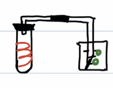
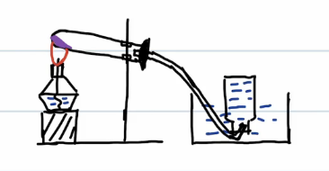
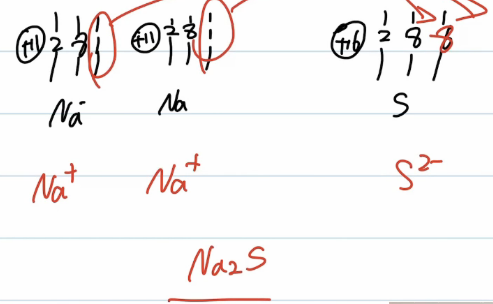
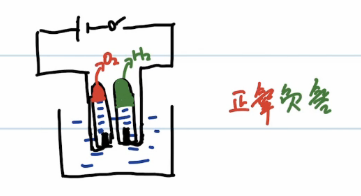

化学笔记
研究对象
物质，以实验为基础
变化与性质
变化
物理
无新物质生成
三态变化
化学
有新物质生成
燃烧、霉变、生锈、消化
性质
“可以” “能” “容易” “易”等词描述的是性质
变化决定性质决定用途
用途体现性质体现变化
物理性质
不需要化学变化体现的性质
色、味、态、熔点、沸点、溶解性、导电导热性、挥发性、吸附性、延展性
化学性质
需要学变化体现的性质
可燃性、助燃性、毒性、热稳定性、酸性、碱性
基本仪器
酒精灯
用途
作为热源，提供热量
注意事项
- 灯芯平整，酒精含量 $\in(\dfrac14V,\dfrac23V)$，用漏斗添加酒精
- 火焰分为三层
- 焰心
- 內焰
- 外焰：与氧气接触面积大，温度最高
- 三严禁
- 严禁对点
- 严禁向点燃的酒精灯内添加酒精
- 严禁用嘴吹灭（用灯帽盖灭）
- 若不慎将酒精洒在桌面上并引燃，不可泼水，用湿抹布或沙土盖灭
试管
用途
可以直接加热，使用方便
- 溶解少量固体
- 用作少量药品的化学反应
注意事项
加热液体
- 试管外壁干燥
- 不超过试管容量的三分之一
- 试管夹夹住上三分之一处
- 试管与水平桌面成 $45^\circ$ 角
- 管口不对人
- 加热完毕后自然冷却
- 反应时液体不应超过一半
烧杯
用途
- 溶解大量固体
- 能进行大量试剂的化学反应
注意事项
- 烧杯不能准确量取液体
- 使用时需选取合适
- 加热需垫石棉网
- 溶解固体时用玻璃棒搅拌，不能碰触杯壁或杯底
玻璃棒
用途
- 搅拌：加速溶解或散热
- 引流：过滤
- 蘸溶液：测 pH
量筒
用途
准确量取液体
注意事项
- 不能盛热熔液，不能加热，不能进行化学反应
- 选取合适量程，配合胶头滴管
- 读数实现与凹液面最低处保持水平
胶头滴管
用途
滴加液体
注意事项
- 先挤捏胶头，再吸取溶液
- 悬空滴加
- 保持正立
- 洗净（滴瓶上专用的除外）
基本操作
药品取用
原则
- 安全原则：不摸不闻不尝
- 经济原则（无用量要求情况下）
- 液体：1-2 mL
- 固体：铺满试管底部
- 剩余原则：未使用完的药品既不能带出实验室也不能放回原瓶，应放到指定的容器中
固体药品
- 粉末：一平二送三直立（药匙）
- 颗粒：一平二放三缓立（镊子）
液体药品
- 少量：胶头滴管
- 一定量：量筒（需胶头滴管）
- 大量：倾倒，相互倾斜，轻轻蹭擦
加热
先预热，后对准药品部位集中加热
酒精灯，外焰加热
液体
试管、烧瓶、烧杯、蒸发皿
固体
干燥的试管、蒸发皿、坩埚
气密性检查

空气和氧气
空气
氧气 21% 无色无味气体 不易溶于水
氮气 78% 无色无味气体 难溶于水 $\rho$ 略小于空气
用途：保护气
稀有气体：0.94% 氦气He 氩气Ar 氙气Xe
用途：霓虹灯
二氧化碳：0.03%无色无味气体
用途：干冰
其它：0.03% 水蒸气、氢气、臭氧、二氧化硫等
氧气
物理性质
无色无味气体
不易 溶于水
密度比空气大
-183 ℃ 淡蓝色液体
-218 ℃ 淡蓝色雪花状固体
化学性质
供给呼吸
支持燃烧（助燃性）
木炭燃烧
空气中：红光
氧气中：白光
$C+O_2\to^\text{点燃} CO_2$
硫的燃烧
空气中：淡蓝色火焰，刺激性气体
氧气中：产生明亮的蓝紫色火焰，刺激性气体
集气瓶底部放少量水吸收有毒气体防止大气污染
$S+O_2\to^\text{点燃}SO_2$
细铁丝在氧气中的燃烧
空气中：不能燃烧，只能烧到红热
氧气中：剧烈燃烧，火星四射
$Fe+O_2\to^\text{点燃}Fe_3O_4$
磷的燃烧
空气中：产生黄色火焰，产生大量白烟
氧气中：燃烧更旺
$P+O_2\to^\text{点燃}P_2O_5$
镁在空气中燃烧
空气中：发出耀眼的白光，产生白色固体
$Mg+O_2\to^\text{点燃}MgO$
氧气的制备
工业上制氧气
$O_2$ -183℃ 淡蓝色液体
$N_2$ -198℃ 液氮
分离液态空气，物理变化
实验室制氧气
反应原理
高锰酸钾 $\to^\text{加热}$ 锰酸钾+二氧化锰+氧气
紫黑色固体、墨绿色固体、黑色固体、无色气体
$KMnO_4\to^\Delta K_2MnO_4+MnO_2+O_2\uparrow$
装置

试管口处导管塞棉花，防止高锰酸钾进入导管，堵塞导管
步骤
- 查：检查装置气密性
- 装：装药品
- 定：固定装置
- 点：点燃酒精灯
- 收：收集氧气 待导管口有连续气泡时开始收集
- 移：将导管移出水面
- 熄：熄灭酒精灯
检验
验纯
将带火星小木条深入瓶内，若复燃则为氧气
验满
将带火星小木条放在瓶口，若复燃则已满
氯酸钾制氧气
氯酸钾 $\to^\text{二氧化锰}_\Delta$ 氯化钾+氧气
$KClO_3\to^{MnO_2}_\Delta KCl+O_2\uparrow$
装置
与高锰酸钾制氧气相同，不塞棉花
双氧水制氧气
过氧化氢 $\to^\text{二氧化锰}$ 水+氧气
$H_2O_2\to^{MnO_2}H_2O+O_2\uparrow$
催化剂
在化学反应中用来改变化学反应速率而本身的质量和化学性质不变
正催化剂 加快反应
负催化剂 减慢反应
一种催化剂可以加快多个反应的反应速率
同一个反映可以有多种催化剂
物质分类
混合物：由多种纯净物混合而成
空气
纯净物：仅由一种物质组成
氧气
反应类型
四大基本反应，按反应物、生成物种类分
化合反应
多种物质生成一种物质
“多变一”
分解反应
一种物质生成多种物质
“一变多”
置换反应
复分解反应
按是否有氧气参与，可以分为 氧化反应 和 非氧化反应
氧化反应
剧烈氧化
有火焰：燃烧、爆炸
缓慢氧化
无火焰：呼吸（发霉）、生锈
非氧化反应
分子，原子和离子
微观粒子共同特征
小
不仅体积小，质量小
不断运动
温度升高，运动加快
有间隔
三态变化为微观粒子间隔的变化
分子物质
$H_2O,H_2O_2,O_2,N_2,H_2,CO_2,P_2O_5,SO_2$ 等
原子物质
金属、稀有气体、金刚石、石墨、硫、磷
离子物质
$NaCl$（食盐）、$KMnO_4$、$MgO$、$K_2MnO_4$、$MnO_2$、$KClO_3$、$KCl$ 等
分子
- 保持（分子构成的）物质化学性质的最小微粒
- 分子由原子构成，同种分子化学性质相同，不同种分子化学性质不同
原子
化学变化中的最小微粒
化学反应：分子分裂为原子，原子重新组合为新分子的过程
结构
- 原子
- 原子核
- 质子（一个质子带一个单位正电荷）
- 中子（不带电）
- 核外电子（一个电子带一个单位负电荷）
- 原子核
质子数=核外电子数=核电荷数=原子序数
1 到 20 号 元素原子排布规律
从左往右排，排满一层排一层
每层最多排 8 个（第一层最多两个）
最外层为 8 电子时为稳定结构，当第一层为最外层，2 电子为稳定结构
原子团
不组成物质
$OH$ 氢氧根
$NO_3$ 硝酸根
$CO_3$ 碳酸根
$SO_4$ 硫酸根
$NH_4$ 铵根
$HCO_3$ 碳酸氢根
相对原子质量
$\dfrac{\text{原子实际质量}}{\text{碳12原子实际质量}\times\dfrac1 {12}}\approx\text{质子数}+\text{中子数}$
离子

- 带电的原子或原子团
- 离子符号
- 元素符号
- 右上角标出电荷，数字在前符号在后
- 电荷为 1 须省略
- 离子种类
- 正（阳）离子：质子数大于核外电子数
- 负（阴）离子：质子数小于核外电子数
- 离子形成规律
- 核外电子数 4 及以下失去，正离子
- 核外电子数 4 以上得电子，负离子
- 核外电子数 8（第一层 2）稳定
- 原子团形成的离子
- $OH^-$ 氢氧根离子
- $NO^-_3$ 硝酸根离子
- $CO^{2-}_3$ 碳酸根离子
- $SO^{2-}_4$ 硫酸根离子
- $HCO^-_3$ 碳酸氢根离子
- $NH^+_4$ 铵根离子
水
水的净化
净化流程
原水 $\to$ 静置 $\to$ 加入明矾，沉降池 $\to$ 过滤池 $\to$ 加入活性炭，吸附池 $\to$ 加入氯气或漂白粉，消毒池（化学变化） $\to$ 自来水
过滤
一贴：滤纸津贴漏斗边缘
二低：
- 滤纸低于漏斗边缘
- 滤液低于滤纸边缘
三靠：
- 盛待过滤液的烧杯紧靠玻璃棒
- 玻璃棒底端紧靠滤纸三层一侧
- 漏斗出口紧靠烧杯内壁
软水、硬水
软水：含有少量或不含可溶性钙镁离子 $Ca(HCO_3)_2$ 化合物的水
硬水：含有较多可溶性钙镁离子化合物的水
鉴别
加入肥皂水后振荡
软水：泡沫多
硬水：泡沫少，有浮渣
硬水危害
生活中：洗不干净
工业上：堵塞管道
对人体：结石类疾病
硬水软化
生活中：煮沸
工业上：蒸馏
水的性质
物理性质
无色透明的液体，标准大气压下沸点 100℃，4℃ 时密度最大
化学性质
$CaO$ 与水反应
$CaO+H_2O\to Ca(OH)_2$
$CO_2$ 与 $H_2O$ 反应
$CO_2+H_2O\to H_2CO_3$
水的电解

$H_2O\to^\text{通电}H_2\uparrow+O_2\uparrow$
结论：水是由氢氧元素组成的
注意事项：
- 通直流电
- 氢气与氧气体积比为 2:1
- 向水中加入 $NaOH$ 或硫酸是为了增强水的导电性
- 氢气是难溶于水，密度最小的气体；可燃，燃烧前需验纯
元素
元素
具有相同核电荷数的同一类原子（离子）的总称
与原子区别
- 原子
- 微观概念
- 种类+个数
- 个体
- 元素
- 宏观概念
- 只讲种类
- 总体
元素符号
- 表示元素
- 表示一个原子
元素的分类与含量
- 金属元素
- 稀有气体元素
- 非金属元素
地壳中
$O,Si,Al,Fe,Ca$
空气中
$N,O$
人体中
$O,C,H,N,Ca$
元素周期表
物质分类
纯净物
单质
同种元素组成
化合物
不同种元素组成
氧化物：由我昂中元素组成，有一种为氧元素的化合物
混合物
空气、矿泉水
化学式及其计算
化合价
元素的性质
从电子得失角度定义
不同元素原子相互化合时，
若某元素原子失电子，则在形成的化合物中，该元素显正价，失几个电子就显正几价；
若某元素原子得电子，则在形成的化合物中，该元素显负价，得几个点子就显负几价。
单质中元素化合价为 0。
化合价口诀
一价氢氯钾钠银
二价氧钙钡镁锌
三铝四硅五价磷
二三铁、二四碳
二四六硫都齐全
铜汞二价最常见
负一硝酸氢氧根
负二碳酸硫酸根
正一价的是铵根
用已知化合价求未知化合价
- 单质中元素化合价为 0
- 化合物中各元素化合价代数和为 0
- 原子团化合价等于组成其各元素代数和
化学式
用元素符号和数字来表示物质组成的式子
化学式写法
单质化学式
由原子构成的单质
元素符号
$Fe,He,S$
由分子构成的单质
化学式在元素右下角用数字标出分子中原子个数
$N_2,O_2,O_3$
化合物化学式
- 写出元素或原子团：正价左负价右，金属左非金属右，氧在右
- 标化合价
- 交叉写出各原子（离子）个数
- 检查各元素化合价是否为 0
化学式的意义
$H_2O$
- 宏观
- 水这种物质
- 水是由氢元素和氧元素组成
- 微观
- 一个水分子
- 水由水分子构成，一个水分子由两个氢原子和一个氧原子构成
化学式计算
相对分子质量
分子中各原子相对原子质量与其个数乘积的代数和
$H_2O$ 的相对分子质量=$1\times2+16\times1=18$
各元素质量比
分子中各原子相对原子质量与其个数乘积之比
$H_2O$ 中 $H$ 与 $O$ 质量比=$1\times2:16\times1=1:8$
$NH_4NO_3$ 中各元素质量比=$14\times2:1\times4:16\times3=7:1:12$
$Na_2SO_4$ 中各元素质量比=$23\times2:32\times1:16\times4=23:16:32$
元素质量分数
该元素相对原子质量 $\times$ 分子中该原子个数
$H_2O$ 中 $H$ 质量分数 $=\dfrac{1\times2}{1\times2+16\times1}\times100%=11.1%$
$NH_4NO_3$ 中 $N$ 质量分数 $=\dfrac{14\times2}{14\times2+1\times4+16\times3}\times100%=35%$
$Na_2SO_4$ 中 $Na$ 质量分数 $=\dfrac{23\times2}{23\times2+32\times1+16\times4}\times100%=32.4%$
质量守恒定律
定义
宏观
在 化学反应（物理反应不适用） 中，参加反应的物质总质量等于反应后生成物物质总质量
微观
粒子的分分合合，质量不变
注意事项
- 只适用于化学变化
- 参加反应的物质指真正参与反应的物质，不包括无反应的部分
- 仅是质量守恒，不适用于其它的量
六个不变
微观
- 原子种类不变
- 原子个数不变
- 原子质量不变
宏观
- 元素种类不变
- 元素质量不变
- 物质质量不变
两个变
微观
分子种类变
宏观
物质种类变
化学反应方程式及其计算
化学反应方程式
定义
用化学式来表示化学反应的式子（遵循质量守恒定律——原子个数左右相等）
化学反应方程式书写
原则
- 符合客观事实
- 符合质量守恒定律
步骤
写出符号表达式
配平
观察法
$2KMnO_4=K_2MnO_4+MnO_2+O_2\uparrow$
$3Fe+2O_2=^\text{点燃}Fe_3O_4$
$2Al+3H_2SO_4=Al_2(SO_4)_3+3H_2\uparrow$
最小公倍数法
$2KClO_3=^{MnO_2}_\Delta 2KCl+3O_2\uparrow$
奇数偶数法
$2H_2O_2=^{MnO_2}2H_2O+O_2\uparrow$
$4NH_3+5O_2=4NO+6H_2O$
设 1 法
还原法
化学反应方程式读法和意义
$2H_2O=^\text{通电}2H_2\uparrow+O_2\uparrow$
水在通电的条件下，生成氢气和氧气
意义：反映反应物、生成物种类，反应条件
每 36 份质量的水仔通电的条件下，生成 4 份质量的氢气和 32 份质量的氧气
意义：反映出反应物与生成物质量比
在通电的条件下，每 2 个水分子可以生成 2 个氢气分子和 1 个氧气分子
意义：反映出反应物与生成物分子个数
计算
碳及其氧化物
碳单质
碳单质物理性质差别大：构成其碳原子排列方式不同
其它主要含碳的一些物质：
木炭
燃料
活性炭
吸附
焦炭
冶炼金属
炭黑
墨、颜料
| 金刚石 | 石墨 |
|---|---|
| 碳原子 $C$ | 碳原子 $C$ |
| 无色透明 | 深灰色细鳞片状固体 |
| 正八面体 | 层状 |
| 硬度大 | 质软 |
| 不导电 | 导电性好 |
| 不导热 | 润滑，耐高温 |
| 首饰、钻头、玻璃刀 | 铅笔芯、高温润滑剂、电极 |
$C_{60}$：足球烯，或富勒烯，由分子构成，超导材料
化学性质
常温下稳定
山水画、签字笔……
与氧气反应
$O_2$ 不足：$2C+O_2=^\text{点燃}2CO$
$O_2$ 充足：$C+O_2=^\text{点燃}CO_2$
还原性
$3C+2Fe_2O_3=^\Delta 3CO_2+4Fe$
$C+CO_2=^\Delta 2CO$
一氧化碳
物理性质
无所谓无味气体
密度略小于空气
难溶于水
化学性质
毒性
可燃性
$CO+O_2=^\text{点燃}CO_2$
通常用于尾气处理
还原性
工业炼铁原理
$3CO+Fe_2O_3=^\Delta 2Fe+3CO_2$
二氧化碳
物理性质
无色无味气体，密度大于空气，能溶于水
固态为干冰，易升华
化学性质
不可燃不助燃
$CO_2$ 与 $H_2O$ 反应
$CO_3+H_2O=H_2CO_3$
与澄清石灰水反应
用于鉴别 $CO_2$
$CO_2+CA(OH)_2=CaCO_3\downarrow+H_2O$
用于吸收 $CO_2$
$CO_2+2NaOH=Na_2CO_3+H_2O$
制备
工业制 $CO_2$
$CaCO_3=^\Delta CaO+CO_2\uparrow$
实验室制 $CO_2$
反应原理
块状大理石与稀盐酸反应
$2HCl+CaCO_3=CaCl_2+H_2O+CO_2\uparrow$
注意事项
- 不用大理石粉末或 $CaCO_3$ 药品，因为反应太快，不易控制
- 不用稀 $H_2SO_4$，因为生成的 $CaSO_4$ 微溶，覆盖在未反应大理石表面，阻止反应的进一步发生
- 不用浓 $HCl$，因为会发出的 $HCl$ 导致收集的气体不纯净
验纯
将澄清石灰水滴入瓶内，振荡，若变浑浊则为 $CO_2$
验满
将燃着的木条放在瓶口，若熄灭则已满
金属
物理性质
纯金属物理性质
银白色固体，有金属光泽
$\color{red}Cu$ $\color{yellow}Au$
$\color{blue}Hg$ 液体
延展性
特性
熔点最低 $Hg$
熔点最高 $W$
密度最小 $Li$
密度最大 $Os$ 锇
硬度最大 $Cr$ 铬
硬度最小 $Cs$ 铯
导电导热性 $Ag$
延展性 $Au$
分类
轻金属
$Li$, $Na$, $K$, $Ca$, $Mg$, $Al$
重金属
$Fe$, $Cu$, $Hg$, $Au$, $Pb$…
黑色金属
$Fe$, $Cr$, $Mn$
有色金属
其它金属
合金
定义
一种金属与其它金属（或非金属）熔合而形成的具有金属特性的 混合物。
特性
硬度大于组成其各金属的硬度
抗腐蚀性大于组成气各金属的抗腐蚀性
铁合金
与碳
铝合金
镁
铜合金
青铜：$Cu$, $Sn$ 锡
黄铜：$Cu$, $Zn$
白铜：$Cu$, $Ni$ 镍
钛合金
亲生物金属、人造骨骼、可塑性强、耐高温、强度高
溶液
定义
一种或几种物质分散到另一种物质中形成均一、稳定的混合物
溶质
被分散的物质
溶剂
分散其它物质的物质
溶液质量
$m=$ 溶质质量+溶剂质量
$m=\rho V$
各类溶液
蓝色
$CuSO_4$, $CuCl_2$, $Cu(NO_3)_2$
浅绿色
$FeSO_4$, $FeCl_2$, $Fe(NO_3)_2$
黄色
$Fe_2(SO_4)_3$, $FeCl_3$, $Fe(NO_3)_3$
紫红色
$KMnO_4$
溶解过程热现象
溶解放热
$NaOH$，浓 $H_2SO_4$ 稀释
溶解吸热
$NH_4NO_3$
反应放热
$CaO+H_2O=Ca(OH)_2$
乳化作用（乳浊液）
向乳浊液（油水体系）加入洗涤剂震荡，油会变成小液滴均匀分散于水中。
溶液酸碱性和碱
酸碱盐定义
酸
$HCl\to^{H_2O}H^++Cl^-$
$H_2SO_4\to^{H_2O}2H^++SO_4^{2-}$
$H_2CO_3\to^{H_2O}2H^++CO_3^{2-}$
$CH_3COOH\to^{H_2O}H^++CH_3COO^-$
酸 $\to^{H_2O}H^++$ 酸根离子
酸根离子：$CO_3^{2-}$, $NO_3^-$, $SO_4^{2-}$, $Cl^-$
在水溶液中，电离出的阳离子全部为氢离子的化合物叫酸